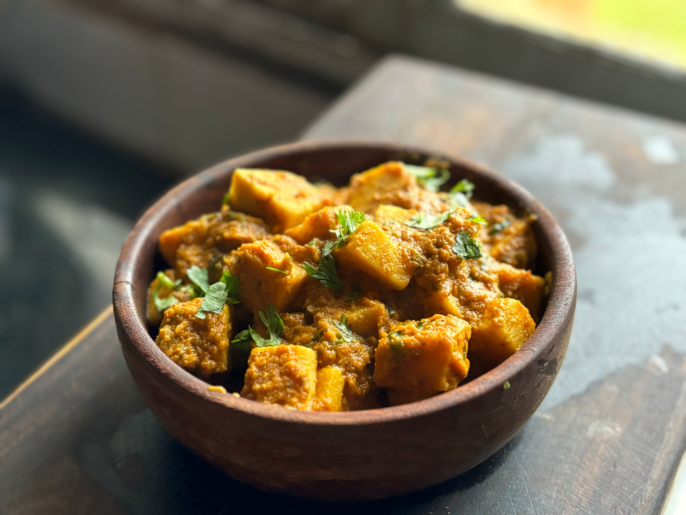

Butter Tofu

Description
The ultimate Indian comfort food. Quick and easy to make.
Ingredients
For the Tofu
- 400 g tofu
- 2 tbsp oil
- 1 tbsp cornstarch
- 1 tbsp curry powder
- 1/2 tsp salt
For the Sauce
- 2 tbsp vegan butter
- 1 large onion, chopped
- 2 cloves garlic, minced
- 1 tbsp grated fresh ginger
- 1 tbsp garam masala
- 1 tsp curry powder
- 1 tsp salt
- 1/2 tsp cayenne pepper
- 90 g tomato paste
- 400 g coconut milk or plant-based cooking cream
For Serving
- Rice
- Naan
- Fresh coriander
- Limes
- Sesame seeds
Steps
- Wrap the tofu in paper towels and press dry as best as you can. Then unwrap and tear into cube-sized pieces.
- Place the tofu chunks in a bowl. Add the cornstarch and seasonings and toss until all the pieces are coated.
- Heat the oil in a frying pan. Add the tofu pieces and cook until all sides are lightly browned and crispy.
Remove the tofu and set aside.
- Wipe out the pan with a paper towel. Add the vegan butter and heat up. Add the onions and sauté for 3-4
minutes until translucent. Then add the garlic and ginger and sauté for a further minute. Add the spices and
tomato paste and stir-fry briefly. Then add the coconut milk, stir and simmer for approx. 5 minutes.
- Add the tofu to the sauce and stir gently until all the pieces are coated.
- Serve the butter tofu with rice and vegan naan. Garnish with fresh coriander, lime and sesame seeds. Enjoy
your meal!
Home